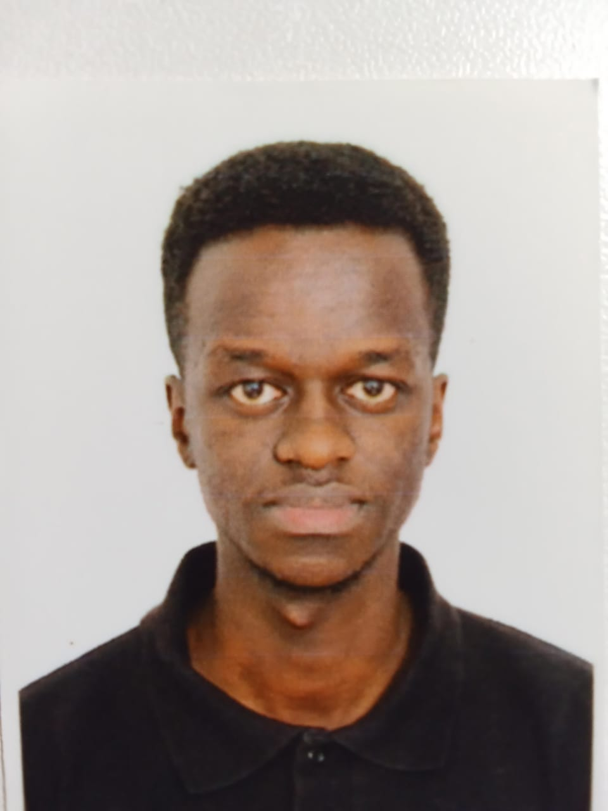
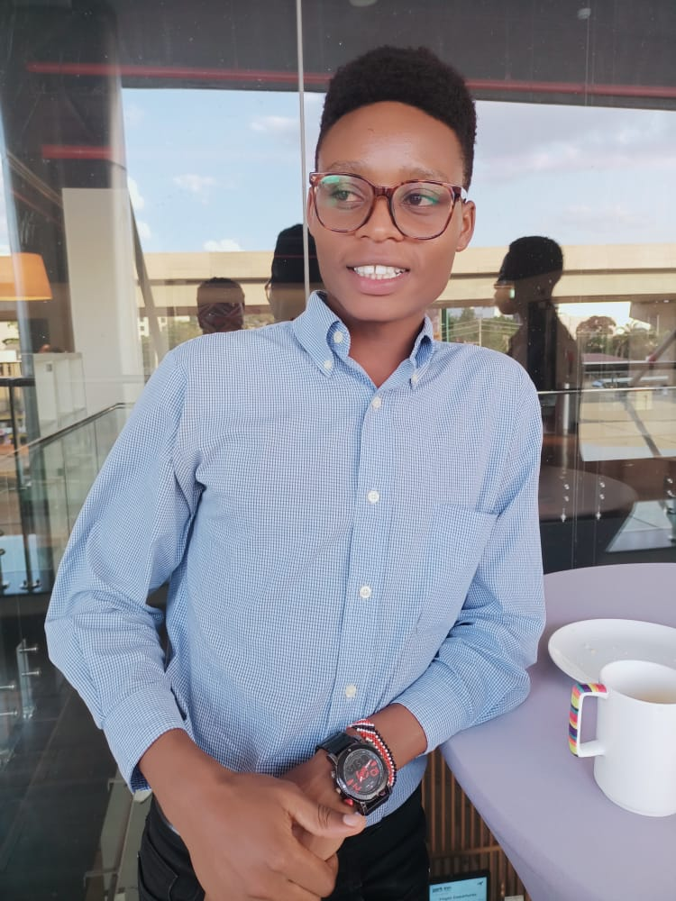
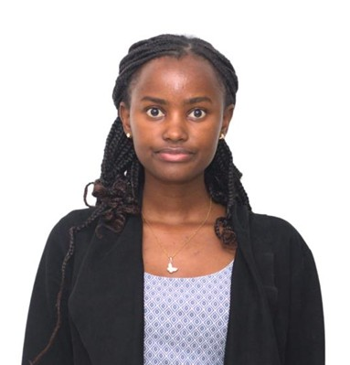

Our Valued Partners
ToCAWI Initiative operates through a collaborative network of dedicated local partners across Kenya. By working alongside established clinics, rescue centers, and academic institutions, we scale our impact and ensure every community receives specialized support Rabies-free.
Local Clinics
Providing essential specialized training and critical medical support for systemic mass vaccination drives and outreach programs in rural regions.
Rescue Centers
Serving as safe havens and strategic hubs for outreach, rescue operations, and behavior workshops across the Nairobi metropolitan area.
Universities
Driving innovation through joint research projects and specialized student programs that integrate animal welfare into local higher education.
Animal Shelters
Functions as core vaccination hubs and facilities for humane population management, ensuring compassionate care for every animal in need.
Meet Our Team
ToCAWI is powered by a multidisciplinary team committed to a rabies-free future. From senior veterinary surge surgeons to grassroots educators, our leadership ensures every initiative is science-backed and community-focused.
Dr. Christopher N. Mutavi
Dr. Lisa Wangui
Dr. Ahmed Abdallah

Dr. Lenny Mureithi

Brian Nzangi

Dr. Corazon Nyambura
Collaborate for a Rabies-Free Kenya
We invite clinics, NGOs, schools, and local governments to join our mission. Together, we can build a future where every community is protected and every animal is valued.
- Host a Vaccination Clinic: Provide venue space and local logistics support for our mobile medical teams.
- Fund Local Campaigns: Sponsor a specific vaccination drive in a high-need rural district.
- Offer Venue for Workshops: Share your facilities for community animal welfare and safety education sessions.
- Support Student Research: Partner on academic training and research initiatives with local universities.